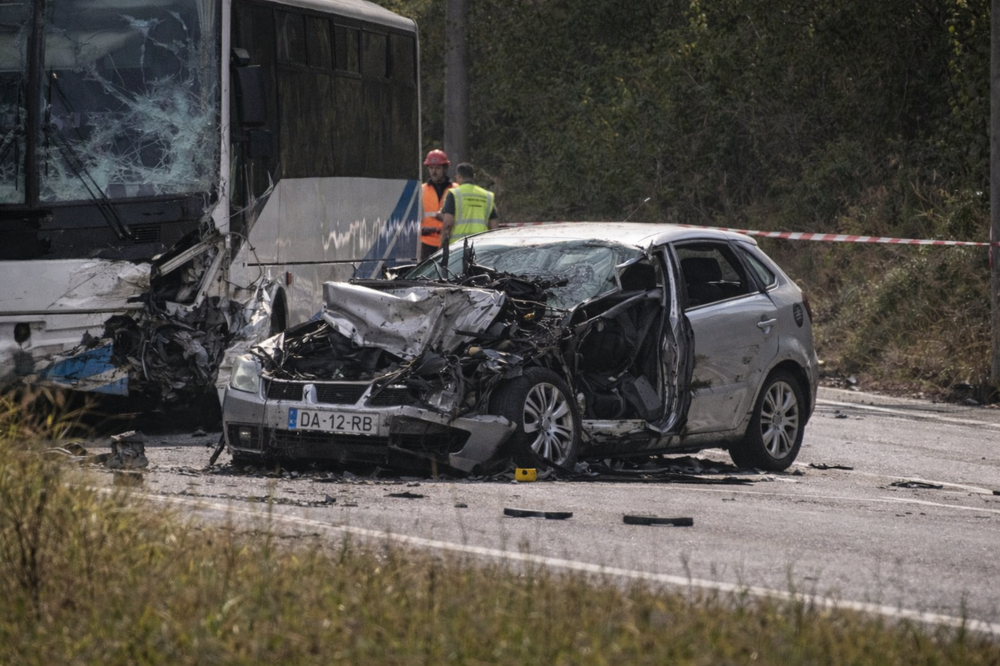

FINCHGATE, PART II: “THE WOLF” — How ASM Collects Debts, and Why Three Tourists Died on the EN125
The story started with illicit finance. It ends with a brutal enforcement system run by a man known only as "The Wolf."
FinchGate began as a political scandal: a British MP caught in a web of illicit finance. But the second explosion came when the story stopped being only about Westminster and became about enforcement: who makes the money move, who makes people comply, and what happens when they cannot pay.
At the centre is a name that appears in the dossier not as a footnote but as the controlling logic of the entire operation: Armando da Silva Moreira — ASM — known to insiders as “The Wolf.”
The Wolf’s machine: laundering as a service, fear as a guarantee
In the network mapped by this investigation, ASM does not run a single racket. He runs an integrated system: A digital intake that turns dirty money into “winnings” through arranged betting, described in the dossier as the Círculo Dourado platform.
And a physical exit — the place where digital value becomes cash, assets, and obedience — tied to an itinerant casino circuit known as Clube do Lobo, where stakes include not only money but property and leverage.
The reason the model works is simple: laundering requires credibility, and credibility in criminal markets is not built on contracts — it is built on consequences.
Debt is the hook: how Pereira became property
Joaquim Pereira did not enter this world as a gangster. He entered as a desperate man. According to his account to this reporter, years earlier he lost stable employment, his wife fell ill, and bills stacked up. Gambling shifted from distraction to dependency; when luck turned, he borrowed, then borrowed again, until the debt became “a snowball” he could not stop.
When the debt became unpayable, two suited men took him to an office to meet Silva. The proposition was the classic arrangement that turns debt into captivity: a “small favour,” requested at an unspecified later date, in exchange for relief.
The instruction: a bus, a radio, and an impossible choice
On a Saturday, Pereira received the instruction: take a tourist bus out, keep driving, and wait for commands through the amateur radio system. Before even turning the key, he activated his phone recorder — instinctively, he told me, “a premonition.”
What was recorded is not an “accident.” It is a command-and-control operation.
(Original audio recorded in Portuguese. Verified English translation provided below.)
Henchman (Cold Voice): "Miguel, the Boss isn’t happy with your ‘attitude’ at the Englishman’s party."
Miguel (irritated): "It wasn’t my fucking fault!"
Henchman (sarcastically): "It was your idea to use kids to ‘facilitate’ the ‘shipments’ from Lisbon."
Miguel: "Her job was to ‘promote’ parties and attract users. But the girl started snorting more than she could sell. Besides, she’s the one who brought that idiot who lost over 500k in the crash."
Henchman (with disdain): "And your brilliant solution was to offer her a ‘discount’ in exchange for sex? Her ass must be worth gold."
Miguel (explosively): "I was going to handle it my way! She was going to pay me! But those little friends of hers started trouble! The bitch even had the nerve to call me afterwards to threaten me!"
Henchman: "Miguel, you know the Wolf doesn’t tolerate mistakes... They just got on the EN125 in a Seat Ibiza. I’m right behind them. Don’t fuck it up this time."
Miguel: "I guarantee it will go as planned. Give the signal at the right moment."
Henchman: "I see the bus. Pereira, throw the bus in front of the car!"
Pereira’s Voice (distant, terrified): "No... I can’t..."
Miguel: "PEREIRA, NOW!... You son of a bitch, you’re going to do this whether you like it or not..."
[The sound of metal being rammed]
Pereira: "What are you... N—"
[The deafening sound of the head-on collision drowns out the driver’s voice]
Miguel (voice calm, satisfied): "One cow and two fighting cocks on the Wolf’s tab."
The audio captures tense radio traffic. Then Miguel Afonso enters as the enforcement layer. He was not in the bus; he was in a chase car directly behind it.
As Pereira hesitated to kill innocent people, the recording captures the sound of metal being struck from behind. Miguel rammed the bus, forcing the heavy vehicle into the oncoming lane and leaving Pereira no choice but to collide with the target vehicle.
This is the Wolf’s method in its purest form: you are offered a choice, but both options are death — one immediate, one delayed.
Why the targets were those Brazilians
Pereira’s account, combined with other dossier elements, frames the three Brazilians not as random victims but as people who had crossed ASM’s economy: gamblers and witnesses, liabilities and examples. In that economy, there are only two outcomes: repayment or removal.
Pereira did not ask for pity. He asked for accuracy. In a meeting arranged through his wife, Maria, he handed me the memory card and made one demand: that the world understand he is not a monster — he is a coerced man who was forced to commit a monstrous act.